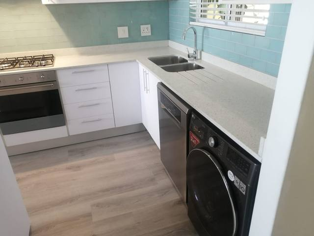
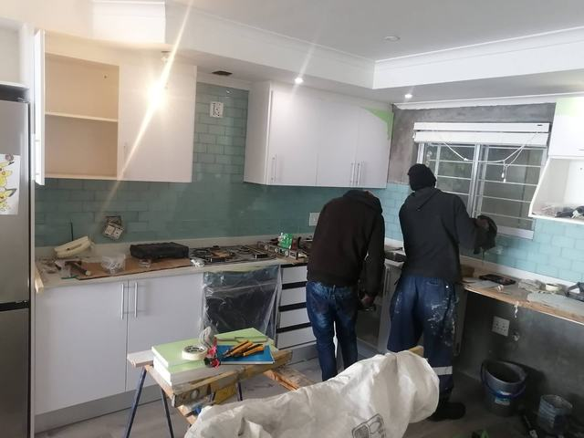
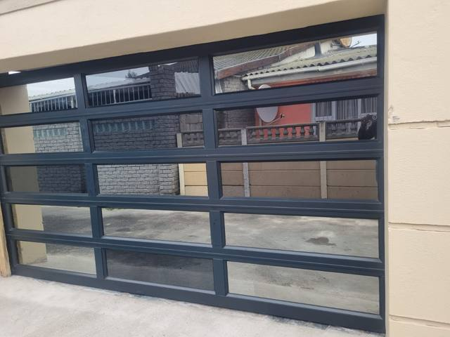
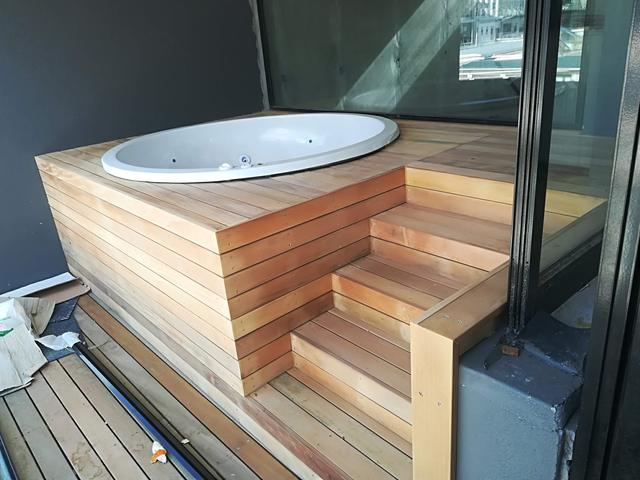

Renovation & woodworks in Blouberg
Blouberg has family homes close to the beach, where sea air and sand are hard on hardware, so finishes have to be chosen with care. We're often asked for kitchens with moisture-resistant finishes, laundry and kitchen combinations, and decks and outdoor timber.
Our work in Blouberg
Blouberg first, then more of our work.






Working in Blouberg
Blouberg, with Big Bay and the classic view of Table Mountain across the water, has family homes and townhouses close to the beach. Wind, sand and salt air are part of life here, so hardware and finishes need to be chosen with care. Our Blouberg photos show a white kitchen with a teal splashback and a laundry nook being installed and finished.
Kitchens · Built-in cupboards · Doors & garage doors · Furniture · Decks · Renovations →
Questions from Blouberg
Have you installed kitchens in Blouberg?
Yes. We've fitted a white kitchen with a teal splashback and laundry space there, using finishes suited to the coast.
Can you include a laundry space in a kitchen?
Yes. In Blouberg we've built a kitchen with a laundry nook. A tall cupboard or recess can hide the washing machine.
What finishes last near the beach in Blouberg?
Moisture-resistant board, quality wrapped or sprayed doors, and stainless or coated hardware.
Can a washing machine be built into a kitchen?
Yes. We design a dedicated laundry section with space for the machine, ventilation and access to the plumbing.
Which kitchen finishes suit a coastal home?
Moisture-resistant boards, sealed edges and corrosion-resistant hinges and handles.